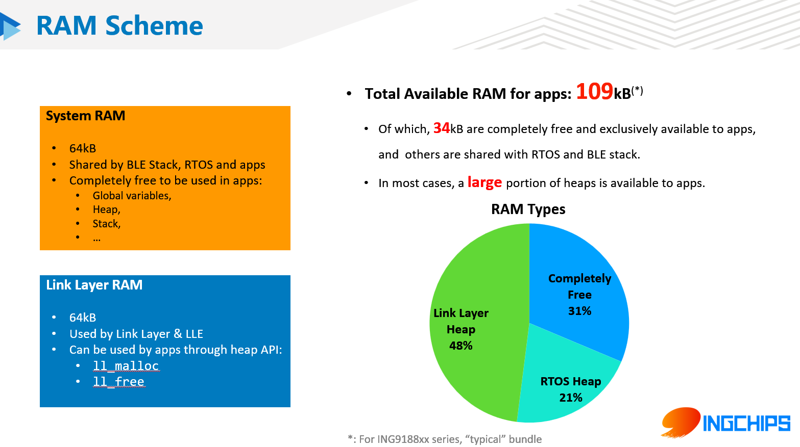
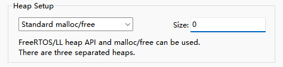
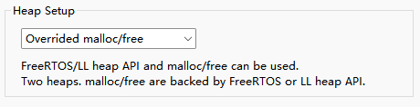

到底有多少 RAM 可供 App 使用？
需要具体分析。如果必须知道一个具体的数字，可参考下图：

上图说明可用的 RAM 分为 3 大块：
- 可自由使用的空闲 RAM
- RTOS 的堆
- 协议栈链路层的堆
下列因素都会影响到可用 RAM 的大小：
- 软件包类型
- 连接数目
- 协议栈的运行情况
- ……
如何才能获得这些 RAM？
同样需要具体分析。
1. 可自由使用的空闲 RAM
直接使用。如果程序所需要的 RAM 过多，链接时会失败。
2. RTOS 的堆
对于内置 FreeRTOS 的软件包，使用 FreeRTOS 的堆内存 API 分配和释放内存：
pvPortMalloc
vPortFree
这两个 API 的原型及用法与 malloc/free 类似。
对于 NoOS 的软件包，RTOS 及堆由开发者选择、配置。下表汇总了几种常见 RTOS 的堆内存 API。
| RTOS | 分配 | 释放 |
|---|---|---|
| FreeRTOS | pvPortMalloc |
vPortFree |
| RT-Thread | rt_malloc |
rt_free |
| ThreadX | 如 tx_byte_allocate 等 |
如 tx_byte_release 等 |
| LiteOS | LOS_MemAlloc |
LOS_MemFree |
3. 协议栈链路层的堆
使用以下 API 分配和释放内存：
void *ll_malloc(uint16_t size);
void ll_free(void *buffer);
这两个 API 的原型及用法与 malloc/free 类似。如果内存不足，ll_malloc 将返回 NULL。
其它提示
1. 关于 calloc
小心栈溢出。
2. 关于 malloc/free
对于 C 标准库函数 malloc/free 等所使用的堆，Wizard 创建新项目时提供了两种实现方式：
-
使用独立的堆
选择 “Standard malloc/free”，并配置空间大小，默认值为 0:

这个堆占用可自由使用的空闲 RAM。
-
重写
malloc/free选择 “Overrided malloc/free”:

这种方式下，利用 Tools/malloc_override.c 模块重写
malloc/free。 这个模块内又可以通过HEAP_OVERRIDE_TYPE选择不同的堆 API 作为支撑，比如：- 使用 FreeRTOS 的
pvPortMalloc/vPortFree - 使用协议栈链路层的
ll_malloc/ll_free
- 使用 FreeRTOS 的
3. 关于 new/delete
C++ 标准运算符 new 的情况比较复杂。对于 Keil，无论是否使用 MicroLIB，当 new 需要分配内存时，
也会调用 malloc，关于 malloc/free 的说明同样适用；对于其它编译器，请查阅相关文档。
关于移植
假设有一段代码需要移植到 ING918XX，其中使用了大量全局变量，例如：
struct large
{
uint8_t data[35000];
};
struct large large_data = {0};
void foo(void)
{
large_data.data[0] = 100;
}
首先根据 struct large 占用的空间判断，RTOS 的堆无法提供如此巨大的空间，必选使用链路层的堆。
方法 1：用宏代替变量
在 setup_profile 内为 large_data 分配内存。之后，可以正常调用 foo 等使用 large_data 的函数。
struct large *p_large_data = NULL;
#define large_data (*p_large_data)
uint32_t setup_profile(void *data, void *user_data)
{
p_large_data = ll_malloc(sizeof(struct large));
memset(&large_data, 0, sizeof(struct large));
// ...
}
方法 2：用引用代替变量
对于使用 C++ 的情况，也可以用引用代替变量：
// 注意：这里编译器可能输出关于“空引用”的警告
struct large &large_data = *(struct large *)(nullptr);
uint32_t setup_profile(void *data, void *user_data)
{
large_data = *(struct large *)ll_malloc(sizeof(struct large));
memset(&large_data, 0, sizeof(struct large));
// ...
}
方法 3：“一定要用工具自动分配”
-
获取堆内存指针
屏蔽
large_data的定义，在setup_profile获取堆内存指针：uint32_t setup_profile(void *data, void *user_data) { printf("%p\n", ll_malloc(sizeof(struct large))); // ... }运行程序，假设打印出的指针为 0x400a5004。
-
修改项目，增加一块 RAM：起始地址为 0x400a5004，大小为 35000
-
将代码还原，正常定义全局变量；
-
再次修改
setup_profile：uint32_t setup_profile(void *data, void *user_data) { if (ll_malloc(sizeof(struct large)) != (void *)0x400a5004) platform_raise_assertion(__FILE_NAME__, __LINE__); // ... } -
升级 SDK 时，如果发现上面的代码触发了 ASSERTION，则重复以上步骤，更新 RAM 地址。